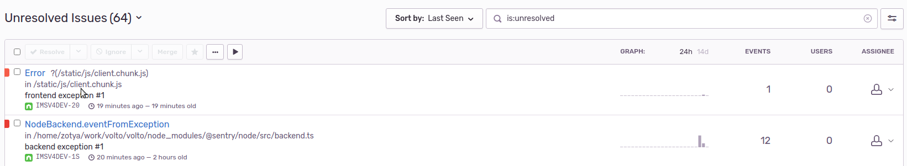
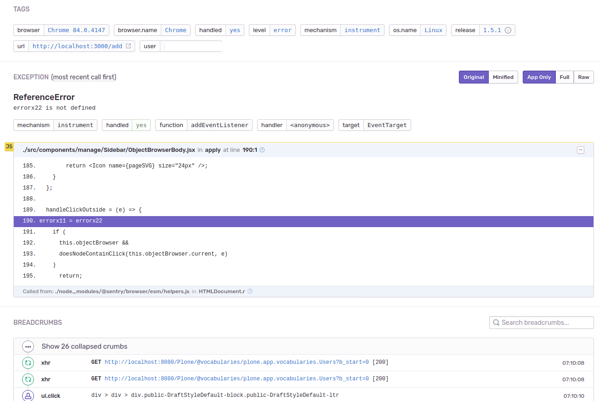
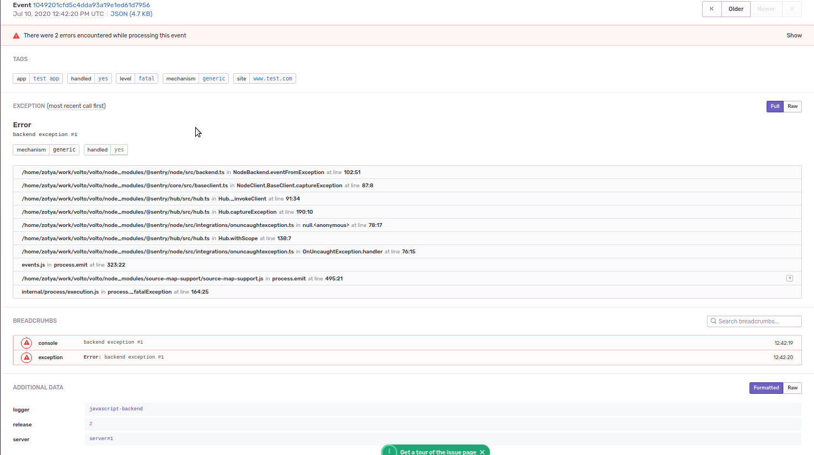

Integration with Sentry#
Volto can be configured to work with Sentry.io. Sentry is a monitoring platform that can help identify the cause of errors in your project.
Prerequisites#
Install the add-on
@plone-collective/volto-sentry.In Sentry, create a new organization, and add a project to it.
On the projects settings page, from Client Keys (DSN), take the
SENTRY_DSN.Create an API Token: in the top-left corner, click on your name -> API keys, and create a new token. project:write scope should be selected.
Note
Instructions tested with Sentry 9.1.2.
Changed in version 16.0.0.alpha.45: Sentry was moved from Volto core and into a separate add-on volto-sentry.
Setup#
Volto creates bundles of the source codes. If an error is sent to Sentry, it will only show the traceback in the bundles. To have a nice traceback, we have to upload the source code and source map to Sentry. This can be configured in our Volto application to do all the steps automatically.
There are 2 ways to configure the application.
1. Build time#
This method can be used when the application is deployed directly on a host machine and built locally.
The configuration is done using environment variables.
SENTRY_DSNRequired to enable the feature.
SENTRY_URLThe URL of Sentry.
SENTRY_AUTH_TOKENThe authentication token for Sentry.
SENTRY_ORGThe name of the organization in Sentry.
SENTRY_PROJECTThe name of the project in Sentry.
SENTRY_RELEASEThe release number.
SENTRY_FRONTEND_CONFIGOptional, here we can specify
TAGSandADDITIONAL DATAfor the messages we send to Sentry from the browser.SENTRY_BACKEND_CONFIGSame as
SENTRY_FRONTEND_CONFIG, but we configure the messages from the backend.
If these environment variables are configured when the app is built, a new release will be created in Sentry, and the source code and source maps will be uploaded to it. After starting the application, if an error occurs, the errors will be sent to Sentry, and will be linked to the specified release.
Example usage:
SENTRY_URL=https://mysentry.com \
SENTRY_AUTH_TOKEN=foo \
SENTRY_ORG=my_organization \
SENTRY_PROJECT=new_project \
SENTRY_RELEASE=2.0.0 \
SENTRY_DSN=https://boo@sentry.com/1 pnpm build
node build/server.js
2. Runtime#
Within your Volto project or a dedicated Volto add-on, you can configure Sentry via the settings.sentryOptions configuration key:
import {
settings as defaultSettings,
} from '@plone/volto/config';
const settings = {
...defaultSettings,
sentryOptions: {
...defaultSettings.sentryOptions,
dsn: 'https://key@sentry.io/1',
environment: 'production',
release: '1.2.3',
serverName: 'volto',
tags: {
site: 'foo.bar',
app: 'test_app',
logger: 'volto',
},
extras: {
key: 'value',
},
integrations: [
...defaultSettings.sentryOptions.integrations,
// new MyAwesomeIntegration()
]
}
};
See more about Sentry Custom Integrations.
In case you plan to use the application using Docker, you will not want to have the Sentry setup in the Docker image. The configuration for setting up Sentry on runtime is very similar to how we set it up for build time, but with some small differences.
SENTRY_URLThe URL of Sentry.
SENTRY_AUTH_TOKENThe authentication token for Sentry.
SENTRY_ORGThe name of the organization in Sentry.
SENTRY_PROJECTThe name of the project in Sentry.
SENTRY_RELEASEThe release number.
RAZZLE_SENTRY_DSNRequired to enable the feature.
RAZZLE_SENTRY_FRONTEND_CONFIGOptional, here we can specify
TAGSandADDITIONAL DATAfor the messages we send to Sentry from the browser.RAZZLE_SENTRY_BACKEND_CONFIGSame as
RAZZLE_SENTRY_FRONTEND_CONFIG, but we configure the messages from the backend.
RAZZLE_SENTRY_RELEASE
The release number, which should be the same as SENTRY_RELEASE.
In the entrypoint of our Docker image, we have to add the script ./create-sentry-release.sh.
When the container is started, this script will check in Sentry if the specified release already exists, and if not, it will create it and upload the source code and the source maps.
The script can also be executed manually, and if we want to overwrite the existing files in Sentry, we can use the --force flag.
./create-sentry-release.sh --force
Example of entrypoint.
#!/usr/bin/env bash
set -Ex
function apply_path {
mainjs=./build/server.js
bundlejs=./build/public/static/js/*.js
test -f $mainjs
echo "Check that we have API_PATH and API vars"
test -n "$API_PATH"
sed -i "s#VOLTO_API_PATH#${API_PATH}#g" $mainjs
sed -i "s#VOLTO_API_PATH#${API_PATH}#g" $bundlejs
sed -i "s#VOLTO_INTERNAL_API_PATH#${INTERNAL_API_PATH}#g" $mainjs
sed -i "s#VOLTO_INTERNAL_API_PATH#${INTERNAL_API_PATH}#g" $bundlejs
gzip -fk $mainjs
}
# Should we monkey patch?
test -n "$API_PATH" && apply_path
./create-sentry-release.sh
echo "Starting Volto"
exec "$@"
Starting the container with Docker.
docker run -p 3000:3000 -p 3001:3001 \
-e SENTRY_URL=https://mysentry.com \
-e SENTRY_AUTH_TOKEN=foo \
-e SENTRY_ORG=my_organization \
-e SENTRY_PROJECT=new_project \
-e SENTRY_RELEASE=2.0.0 \
-e RAZZLE_SENTRY_DSN=https://boo@sentry.com/1 \
-e RAZZLE_SENTRY_RELEASE=2.0.0 volto-app:latest
Or using Docker Compose:
version: '3'
services:
volto:
build: volto
ports:
- 3000:3000
- 3001:3001
environment:
- SENTRY_URL=https://mysentry.com
- SENTRY_AUTH_TOKEN=foo
- SENTRY_ORG=my_organization
- SENTRY_PROJECT=new_project
- SENTRY_RELEASE=2.0.0
- RAZZLE_SENTRY_DSN=https://boo@sentry.com/1
- RAZZLE_SENTRY_RELEASE=2.0.0
Configuration options#
This applies to both SENTRY_FRONTEND_CONFIG and SENTRY_BACKEND_CONFIG.
If you are using build time configuration, you have to use SENTRY_FRONTEND_CONFIG and SENTRY_BACKEND_CONFIG.
If you are using runtime configuration, use RAZZLE_SENTRY_FRONTEND_CONFIG and RAZZLE_SENTRY_BACKEND_CONFIG.
We have the possibility to add TAGS and ADDITIONAL DATA for our messages for categorization in Sentry.
We can configure these two variables separately, as we might want to separate the messages from frontend and backend.
Example of configuration.
{
"tags":
{
"site":"www.test.com",
"app":"test_app"
},
"extras":
{
"logger":"javascript-frontend"
},
"environment": "development",
"serverName": "server #1",
"maxBreadcrumbs": 50
}
Example of usage with build time setup.
SENTRY_URL=https://mysentry.com
SENTRY_AUTH_TOKEN=foo
SENTRY_ORG=my_organization
SENTRY_PROJECT=new_project
SENTRY_RELEASE=2.0.0
SENTRY_DSN=https://boo@sentry.com/1
SENTRY_FRONTEND_CONFIG='{"tags":{"site":"www.test.com","app":"test_app"},"extras":{"logger":"javascript-frontend", "release":"1.4.1"}}'
SENTRY_BACKEND_CONFIG='{"tags":{"site":"www.test.com","app":"test_app"} pnpm build
node build/server.js
Example with Docker Compose.
version: '3'
services:
volto:
build: volto
ports:
- 3000:3000
- 3001:3001
environment:
- SENTRY_URL=https://mysentry.com
- SENTRY_AUTH_TOKEN=foo
- SENTRY_ORG=my_organization
- SENTRY_PROJECT=new_project
- SENTRY_RELEASE=2.0.0
- RAZZLE_SENTRY_DSN=https://boo@sentry.com/1
- RAZZLE_SENTRY_RELEASE=2.0.0
- RAZZLE_SENTRY_FRONTEND_CONFIG={"tags":{"site":"www.test.com","app":"test_app"},"extras":{"logger":"javascript-frontend"}}
- RAZZLE_SENTRY_BACKEND_CONFIG={"tags":{"site":"www.test.com","app":"test_app"},"extras":{"logger":"javascript-backend", "server":"server#1"}}
Example messages in Sentry#
List of messages 
Messages from the frontend, with its own
TAGSandADDITIONAL DATAMessages from the backend, with its own
TAGSandADDITIONAL DATA